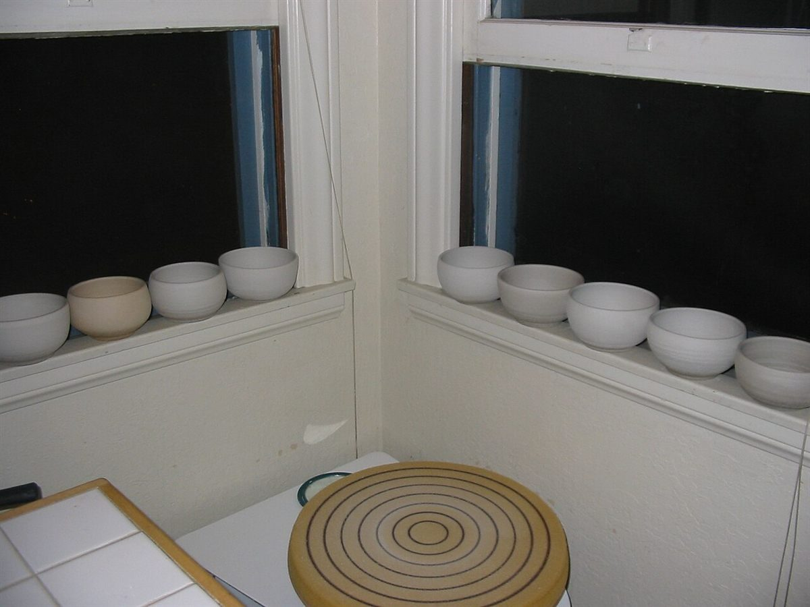

店のこと
確認と想像
お店について確認できているのは、所在地とInstagramのアカウントだけです。ここでは「分かっていること」と「制作側の想像」を、左右に分けて並べます。
分かっていること
- 屋号は「ごはんとおやつ syuO」、業種はカフェ
- 所在地は鹿児島県薩摩川内市中郷2丁目8-34(〒895-0072)
- 電話番号はなし。連絡はInstagramから
- 営業時間・定休日・メニュー・価格・ご予約・駐車場は準備中
制作側の想像
ここは制作側が想像して書いた部分で、お店の実際の様子・考え・提供内容とは関係がありません。
屋号に「と」の字があるので、ひとつに決めなくていい、という空気を想像しました。予定のあいまに寄る日も、ゆっくり時間をとる日も受け止めてもらえそう、という想像です。実際にどうかは、お店に聞いてみないと分かりません。
写真のイメージ
余白に置いた、いくつかの器と道具。
国外・撮影地不明のフリー素材です。お店のものではありません。



屋号について
「syuO」の意味や読み方は、制作側では分かっていません。決めつけずに、お店からうかがった内容に合わせて書き直します。